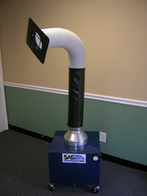

| 300 Portable Floor Sentry Portable Fume Extractor | |||||||||||||||||||||
|
The Portable Floor Sentry Portable Fume Extractor combines mobility and easy setup to provide an excellent choice for workspace environments where clean air is desired. The self-supporting flex and powerful fan combined with a variety of HEPA filter and Activated Carbon filter provide strong suction through the hood inlet. Typical uses may include soldering, powder filling, light grinding dust, light welding fumes and a variety of applications involving chemical fumes. This Portable Fume Extractor can provide an effective and economical solution for many commercial, medical, laboratory and industrial applications.
|
|||||||||||||||||||||
| 400 SERIES High Flow Portable Floor Sentry | |||||||||||||||||||
|  |
The patented fan/filter assembly provides strong suction at the extractor inlet providing source capture for many. The modular design and sturdy construction make it a solid solution for almost any industrial environment applications. All SAS Units combine small size, quiet operation, convenient mobility, and high efficiency filtration to provide an excellent choice for areas where clean air is desired. Standard Features and Benefits:
Typical uses may include:
|
||||||||||||||||||